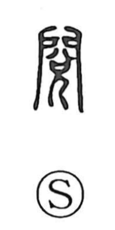

閲

Uncategorized
Kun: kazoeru, kemi suru | On: etsu
to inspect ・ to examine ・ to count ・ troop review
Explanation
Originally written as 閱, this is a phono-semantic character: 兌 functions as the phonetic element, yielding the on reading etsu, while 門 depicts a gate—specifically a military gate. The graph evokes the scene of a commander personally inspecting and counting the captured booty at the gate to record achievements in war. From that image it came to mean counting, examining, and careful inspection, and it naturally took on military usages, as in eppei (troop inspection). Even etsureki, now understood as one’s career record, originally suggested the enumeration of merits won in battle.